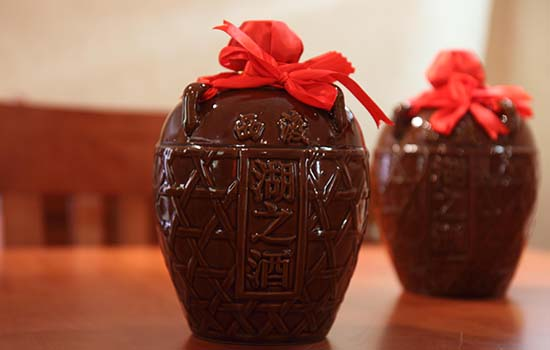
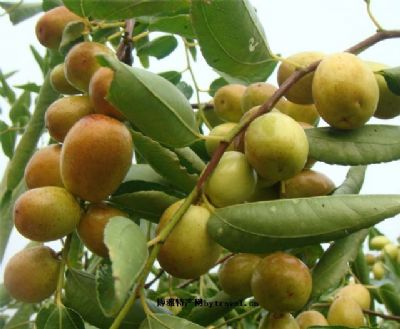
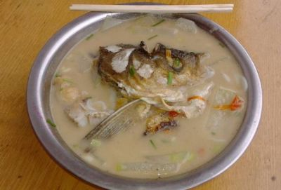

教学班级：通信1902
姓名：贺明
学号：201916180219
自我介绍：
我这人没啥很多兴趣爱好，就是喜欢旅游和看电影，当然，因为人有点懒，所以这些计 划实行起来并不容易，所以也很宅作为一名资深宅男，假期的大部分当然时间都是在宿 舍度过的。so，如何欢快的度过假期呢，大部分时间当然是在追剧和游戏的世界里度过 ，但有时也会沉浸在高数和代码里面，和自己脑子斗智斗勇。我这人吧虽然懒，但是做 事及其认真负责，而且游戏也打的贼6☺美食介绍：
我的家乡在湖南衡阳，有很多的特色美食，下面我就来介绍一些美食。西渡湖之酒：西渡湖之酒属甜黄酒，古称酃湖酒、酃酒、酃醁酒、衡酒，名称的来历 源于衡阳酃湖。衡阳产酒历史悠久，以酃湖西岸产酒最为出名，其制酒技术被北魏贾思勰 所撰《齐民要术》记载并称之为"酃酒法"，形成了中国黄酒独具魅力的"色泽鲜明，醇厚 绵香，浓而不腻，圆润浑厚，清明爽快，不上头"的"酃湖"风格，成为自西汉到清朝历时 二千余年的皇宫贡酒，历久不衰。
祁东酥脆枣:酥脆枣是祁东县新丰果业有限公司用当地一株35年生“糖枣”培育出来的 南方高档鲜枣新品种。该品种在“中秋”前后成熟，故被命名为“中秋酥脆枣”。它不仅改 写了我国南方无高档鲜食枣品种的历史，而且填补了国内鲜食枣中秋前后的市场空白。
鱼粉：鱼粉因为味道鲜美、汤汁浓稠、食后爽心养胃，并且具有很强的饱感，也不容 易饿，深受衡阳市民喜爱。
